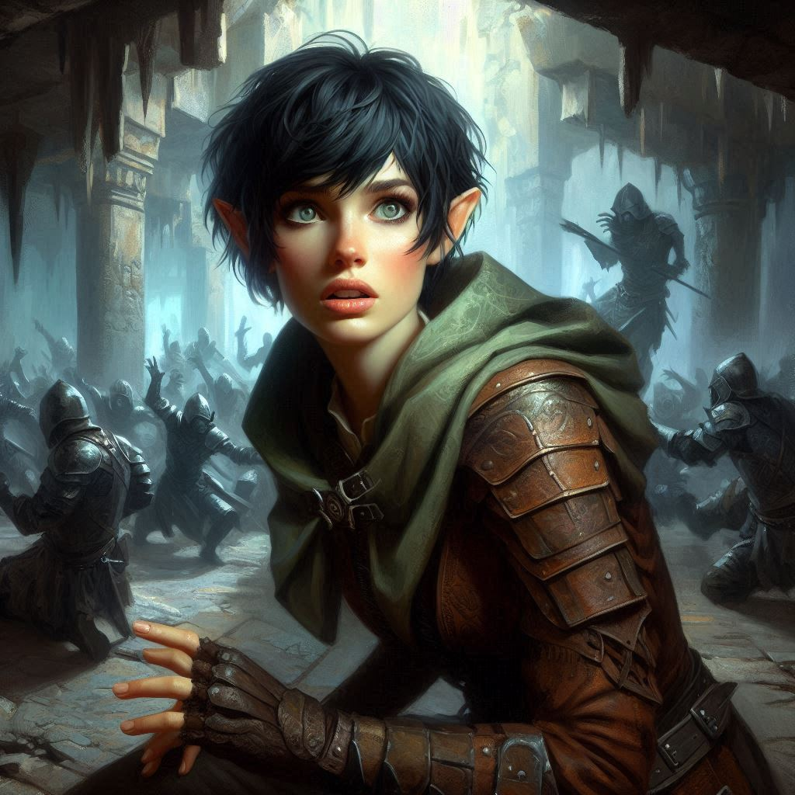
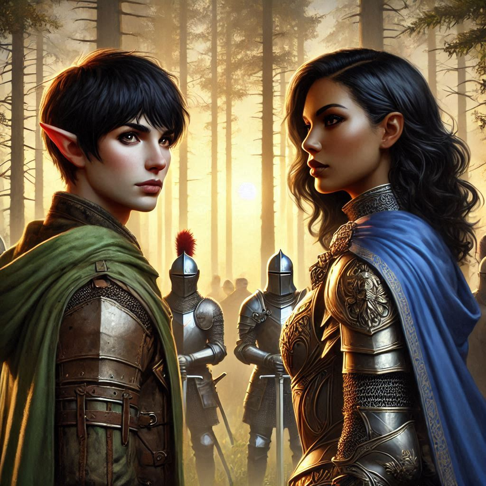
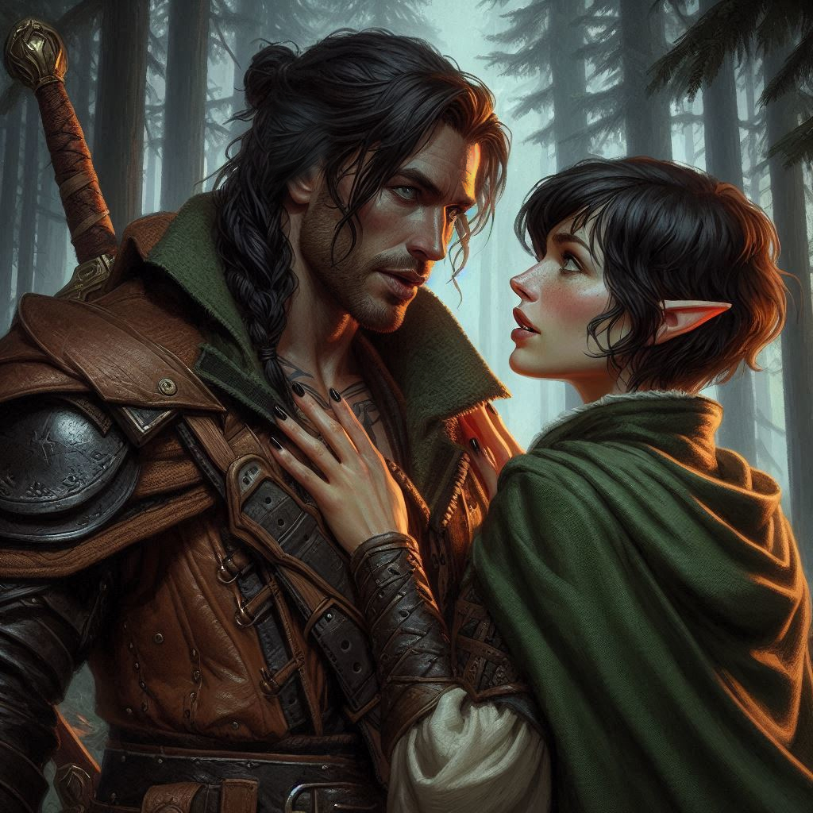

Banishing Yaldaboath
The dark magic surrounding the portal swirls violently, a storm of chaos threatening to consume everything in its path. You feel its power tearing at the walls of Hemlock Caverns, shaking the earth beneath your feet. Jorsh stands at the center of it all, his face twisted in pain and determination. He glances at you, a flicker of regret in his eyes, as he begins to chant the final incantation.
"Jorsh, don’t!" you shout, your voice barely carrying over the roar of the collapsing cavern.
But it’s too late. Jorsh’s sacrifice is already set in motion. With a final cry, he pours all his remaining energy into the spell, sealing the portal once and for all. The ground trembles violently as the dark magic implodes, pulling Jorsh into the vortex before it vanishes entirely.
You can’t move. All you can do is watch as the last remnant of Jorsh disappears into the void, leaving behind nothing but silence and dust.
“Kira! We need to move!” Elias’s voice snaps you back to the present. The ground beneath you is splitting, chunks of stone crashing down around you. Hemlock Caverns are coming down, and if you don’t escape now, you’ll be buried with it.
You and Elias look for Onyx, but the old dwarf is nowhere to be seen. You search frantically for a moment, large chunks of the ceiling of the cavern are crumbling down all around you. You realize that you must leave now if you want to live. The air is thick with dust, and the screams of Varis’s dark elf minions echo in the distance as the caverns collapse around them.
“There!” Elias points ahead, toward a narrow passage leading to the surface. But as you approach, dark shapes emerge from the shadows—Varis’s remaining forces, the last of the dark elf army.
“No! They’re not letting us leave,” you growl, reaching for your sword. “We’ll have to fight our way out.”
You exchange a glance with Elias. There’s no time to hesitate. You draw your blades, your heart pounding in your chest. The dark elves charge at you with a fury born of desperation, their eyes gleaming with malice.
The battle is chaotic, every swing of your sword met with the clash of steel. You fight fiercely, the weight of Jorsh’s sacrifice heavy on your mind, but it fuels your determination. Elias fights beside you, his movements fluid and precise, while your agility and accuracy, though diminished by your fatigue, prove to be a vital asset in keeping the dark elves at bay.
As the last of the dark elves fall, you hear a deafening rumble. The entrance to Hemlock Caverns begins to collapse, an avalanche of stone and earth burying the passage. The way back is sealed, but you’ve made it out—barely.
You stumble forward, out into the open air of Hemlock Falls. The sky above is dimming with the last light of day, and you take in a breath, the fresh air a sharp contrast to the suffocating weight of the caverns.
But your relief is short-lived.
“Hold it right there.” The voice is sharp, commanding. You look up to see a squad of royal guards approaching, their leader stepping forward with regal authority. Princess Hawthorn.
Her piercing gaze sweeps over the scene—the destruction, the bodies of the dark elves, and the dust and sweat covering your skin. “Rangers of Belladonna?” Her voice cold but with a hint of something softer beneath the surface. “Seeking the bounty on Jorsh the Betrayer?”
You nod. “Jorsh the Betrayer is dead,” you say, careful to avoid too many details.
Princess Hawthorn’s expression shifts, a flicker of surprise crossing her face. “Jorsh the Betrayer is gone?”
You hesitate for a moment, the memory of Jorsh’s final moments still fresh in your mind. “He…he sacrificed himself to close the portal… consumed by dark magic.”
For a moment, the princess is silent, her gaze steady and thoughtful. Then she inclines her head, a small but meaningful gesture of respect. “You’ve done Yew a great service, Kira Coldspring. You and your companions are to be commended for your bravery.”
“Your Highness,” you say with a curt bow.
“And the treasure?” Princess Hawthorn studies you carefully.
“The treasure was a lie. A trap,” you say, leveling your gaze at the princess. “It was a portal to the nine hells. Varis was going to unleash the forces of darkness upon the Kingdom of Yew.”
The princess appears stricken for a brief moment, but she recovers quickly in true royal form. “And what of Varis?”
“Also dead,” you say, swallowing a lump in your throat. “Killed by Baider the Blacksmith.”
“And what of this brave blacksmith?” The princess looks from you to Elias and back again.
You shake your head, letting the silence be your reply. The princess nods in understanding and places a hand on your shoulder.
Elias, standing beside you, exchanges a glance with you. It’s a small, silent acknowledgment of all you’ve been through, and the bond that has been tested but not broken. There’s grief between you, for the lives lost and the sacrifices made, but also relief. You fought for each other, and you survived.
The princess regards you with a sharp eye. “Well done, rangers. Your bravery and sacrifice will be publicly commended. Come, let us return to Belladonna and celebrate our victory. We will then rally our forces and return to vanquish our enemies once and for all.”
You and Elias nod, feeling that some time to mourn your fallen friends and pay tribute to their sacrifice will give you the strength you need to finish this fight.